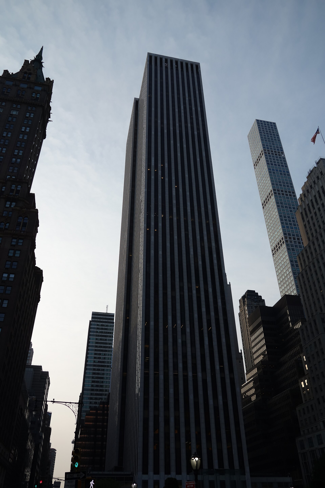

Vol. I · No. 169 · Friday, November 13, 2026 · 14 items · 10.0 min read
Nvidia loses its founder to a board inquiry, a law-firm clerk is charged with trading on five client deals, the long bond tails again, and Trump says he needs no deal with Iran.
Markets & Deals · Santa Clara · cross-spectrum: LLLR
Jensen Huang resigns as Nvidia’s chief executive, and the finance chief takes over while the board hunts for a successor
Nvidia’s headquarters in Santa Clara, California. Coolcaesar, CC BY-SA 4.0 / Wikimedia Commons
Jensen Huang resigned on Thursday as president, chief executive and a director of Nvidia, effective immediately, the company said, ending 33 years at the head of the chipmaker he co-founded. Colette Kress, the chief financial officer, becomes interim chief executive and . Harvey C. Jones, a former Synopsys chief executive already on the board, was named the company’s .
The Board has full confidence in Colette and the leadership team.
Harvey C. Jones, Nvidia statement, Nov. 12
The exit follows an inquiry by independent directors and outside counsel into Huang’s relationship with Alice Huang, a former executive at whom U.S. intelligence reportedly believes China’s Ministry of State Security recruited, the New York Times reported. The Times reported on Thursday a second relationship, with Kimberly Powell, Nvidia’s vice president of health care, who reported to him. The shares fell more than 13 percent at the open and closed down 4.3 percent, ABC News reported.
Third-quarter results stay on Tuesday, Nov. 17, as previously scheduled, the company said. Republican-led House committees have summoned Huang to a closed-door interview, CNN reported, and the Senate Banking chair asked him and Commerce Secretary Howard Lutnick to testify. A is pending. Bernstein’s Stacy Rasgon cut his price target to $200 from $400.
Law & the Courts · Brooklyn
A Cravath document specialist is charged with insider trading on five client deals, including Paramount’s purchase of Warner Bros. Discovery
Prosecutors in Brooklyn on Thursday charged Chetram Balli, 54, a document processing specialist at a major international law firm since about 1989, with ahead of five client deals between April 2025 and October 2026, for profits of more than $70,000. Bloomberg Law identified the firm as Cravath, Swaine & Moore. Balli was arrested and arraigned the same day on a and faces up to 20 years.
The deals were WiseTech’s purchase of E2open, Schwab’s $660 million deal for Forge Global, Paramount Skydance’s $110 billion acquisition of Warner Bros. Discovery, UHS’s $853 million bid for Talkspace and Viatris’s $1.65 billion deal for Pacira. Prosecutors say he bought about 14,866 E2open shares on May 12, 2025, a stock he had never owned, and sold two days after the May 25 announcement. His last Paramount purchase came about four hours before that merger was announced, Bloomberg Law reported. The SEC filed a . Cravath said he was not legal staff and no longer works there.
AI
A lawsuit to stop the work, and a scramble for chips abroad
AI · San Francisco
Nonprofits sue OpenAI, Anthropic, Google, Meta and SpaceX’s AI unit to halt frontier-model development
San Francisco’s Civic Center, seat of the city’s Superior Court. Kitchen, CC BY 2.0 / Wikimedia Commons
Public Citizen, the Heat Initiative and the Irreplaceable Education Fund sued five AI developers in San Francisco Superior Court on Thursday, asking a judge to bar further development of advanced models including ChatGPT, Gemini and Claude, Reuters reported. The complaint pleads California’s and public nuisance, and it builds its case on the defendants’ own warnings, citing Dario Amodei and Elon Musk on catastrophic risk.
‘Nor is any industry granted the right to self-regulate the development of such dangerous products,’ the complaint says. Meta declined to comment and the others did not respond, Reuters said. The suit joins a pending , in which the attorney general asked in September for an order barring new models without outside oversight, and a separate eight-state suit filed last month.
AI · Beijing
Chinese AI firms try to lock up Nvidia capacity abroad before Washington closes the rental route
Chinese AI companies are trying to rent Nvidia chips at overseas data centers, with one major cloud provider discussing locking in capacity and smaller labs eyeing Southeast Asian providers, Reuters reported Thursday, citing three sources who fear the Huang scandal will speed the . Procurement records show a blacklisted university linked to China’s army bought H200 chips last month. The Information reported that Commerce is finalizing a .
Markets & Deals
The long end wobbles, a bank deal, a buyout that did not happen
Markets & Deals · Washington
The 30-year bond tails again as Williams says the Fed has ‘work to do’
The Treasury Building in Washington. MeanieHyaena, CC BY 4.0 / Wikimedia Commons
Thursday’s $25 billion reopening of the 30-year bond cleared at 5.441 percent, 0.4 basis point above the when-issued yield, the long bond’s second straight , investingLive reported. The bid-to-cover ratio fell to 2.36 from 2.54 in October, and took 68.11 percent against 72.32 percent. Dealers were left with 11.39 percent, the most since August. All three coupon auctions this week tailed.
‘We still have work to do,’ New York Fed President John Williams said Thursday evening, Reuters reported, as markets priced a quarter-point increase from the in December and another in January. Cleveland’s Beth Hammack favored ‘smaller increments, more frequent.’ Initial jobless claims rose 9,000 to 200,000. October producer prices are due at 8:30 a.m. Friday.
Markets & Deals · Gulfport, Miss.
Hancock Whitney agrees to buy Trustmark for about $3.2 billion in stock
Hancock Whitney agreed on Thursday to buy Trustmark in an all-stock deal valued at about $3.2 billion, creating a lender with about $58 billion in assets across six Southeastern states, the companies said in a release filed with the SEC. Trustmark holders get 0.7463 Hancock Whitney shares each and will own 35 percent. The banks project about 7 percent accretion to 2028 earnings and about 7 percent dilution to , earned back in about 2.8 years. Wachtell Lipton advises the buyer and Covington & Burling advises . Closing is expected late in the first quarter of 2027.
Markets & Deals · New York
CD&R and GTCR walk away from a take-private of Global Payments
Clayton, Dubilier & Rice and have dropped early-stage talks to take Global Payments private, Reuters reported on Thursday, citing sources who pointed to ‘the complexities of arranging a take-private of this scale.’ The payments processor has a market value of about $26.4 billion. Talks could resume, or another buyer could emerge, the sources said. Reuters noted that lenders are scrutinizing leverage on the largest buyouts as borrowing costs rise.
Law & the Courts
A firm comes apart, another goes dark, a judge is mourned
Law & the Courts · New York
Sidley lines up at least 50 Weil lawyers, Skadden takes a sports dealmaker, and Simpson Thacher stops reporting its numbers

The General Motors Building at 767 Fifth Avenue, Weil’s New York headquarters. Tdorante10, CC BY-SA 4.0 / Wikimedia Commons
Sidley Austin is poised to take at least 50 lawyers, including 12 partners, from in New York, across M&A, private equity, finance, litigation and technology transactions, Bloomberg Law reported on Thursday. Skadden is hiring three Weil partners: Navneeta Rekhi in private equity and Max Scott in technology deals, both in the Bay Area, and Steve Argeris in Washington, a former general counsel of the .
Simpson Thacher & Bartlett said it will stop its financial results, effective immediately, Above the Law reported, citing the Financial Times. The firm said the metrics ‘do not fully reflect the value we provide to our clients.’ It reported 2025 revenue of $3.55 billion, up 22.5 percent. Kirkland & Ellis stopped in early October, and Paul, Weiss the week before Simpson.
Law & the Courts · Chicago
Richard Posner, the judge who taught law to count costs, dies at 87
Richard A. Posner, who sat on the for 36 years, has died at 87, the University of Chicago Law School confirmed, the Associated Press reported. Appointed by Ronald Reagan in 1981, he was chief judge from 1993 to 2000 and retired abruptly in 2017. He wrote about 3,300 opinions and more than 60 books, the Chicago Sun-Times reported, among them , and in 2014 he wrote the ruling that struck down same-sex marriage bans in Indiana and Wisconsin.
The World
Washington hardens on Tehran as Moscow makes an offer
The World · Washington · cross-spectrum: LLLR
Trump says ‘We don’t need a deal with Iran,’ takes Vance off the file and calls a strike ‘possible’
The Strait of Hormuz from the space shuttle. NASA, public domain / Wikimedia Commons
President Trump wrote on Thursday that ‘We don’t need a deal with Iran. Those days have long since passed,’ saying the United States has Iran’s money and , and told to turn to alleged corruption and crime in Democratic-run cities and states, USA Today and ABC News reported. A White House official would not say whether talks had ended.
Asked by Hugh Hewitt later that day about striking Iran, Trump said ‘it’s possible I would do that right now’ if he saw things going the other way, the Times of Israel reported. He told CNN he would consider it a defeat to leave office with Iran’s current leadership in power. Iran’s parliament speaker, Mohammad Bagher Ghalibaf, says Tehran sent a through Qatar and awaits a reply.
The World · Moscow · cross-spectrum: LLC
Putin offers a ‘humanitarian mission’ for Kostiantynivka as Trump’s envoys move on to Zelensky in Dublin
Vladimir Putin proposed a demining and evacuation mission for the contested Donetsk city of , modeled on an earlier one in , after meeting Steve Witkoff and Jared Kushner in Moscow on Thursday, Kremlin aide Yury Ushakov said, adding that the U.S. side supported it. Witkoff, on his 10th visit, said Europeans will join the next round, Reuters reported. The envoys then met Volodymyr Zelensky in Dublin. Prisoner swap numbers were still not final.
Entertainment & EASL
A union vote at Rockstar, a clock on college sports, an auction week
Entertainment & EASL · Edinburgh
Rockstar’s U.K. staff open a union ballot a week before ‘Grand Theft Auto VI’ ships
Rockstar North’s studio in Edinburgh. Discott, CC0 / Wikimedia Commons
More than 1,600 Rockstar Games employees in Britain began voting on Thursday on recognition of the Rockstar Game Workers Union, a branch of the , in a ballot that runs to Nov. 26, The Register reported. The game launches on Nov. 19. A yes vote would create the largest recognized union in the U.K. games industry, with terms on pay, overtime, pensions, bonuses, leave, consultation on HR policy and .
The proposed agreement follows four months of talks, PC Gamer reported. An in Scotland is hearing claims over Rockstar’s firing of 31 union members in October 2025, which the union calls union busting and the company says was for gross misconduct over leaks. Closing submissions are due Nov. 17 and 18. ‘We go where the team goes. So if they want a union, they will have a union,’ Jennifer Kolbe, Rockstar’s head of publishing, told Bloomberg.
Entertainment & EASL · Washington
College-sports bill backers make a lame-duck push before a Democratic House is seated
Supporters of the Protect College Sports Act, which passed the Senate 77 to 22, are lobbying Republican leaders and House Democrats to send it to President Trump before the new Congress is sworn in and the bill , Front Office Sports reported on Thursday. , led by Texas Tech board chair Cody Campbell, is running a multimillion-dollar ad buy, and Yankees president Randy Levine wrote to every House member. Florida governor-elect Byron Donalds said: ‘I hate that bill.’
Entertainment & EASL · New York
New York’s November sales aim for at least $2 billion, led by a guaranteed $180 million Van Gogh
Auction houses expect at least $2.04 billion and possibly more than $2.4 billion from New York’s November sales, The Art Newspaper reported Thursday, with Sotheby’s targeting a house-record $1.1 billion. About $450 million of that rides on the , 12 paintings offered Nov. 18, including Van Gogh’s ‘Blossoming Chestnut Trees’ at about $180 million, against a record of $117 million for the artist. Christie’s expects $823 million to $1.1 billion. ‘People aren’t day-trading Picassos,’ said Christie’s Kat Widing.
Compiled by Matthew Yellin · mattyellin.com · Est. May 2026 · A cross-spectrum brief drawn each morning from wires, filings, and the trade press